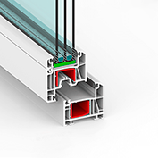
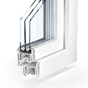
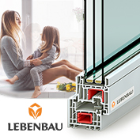

Пластиковые окна



Работаем на прямую с производителями LIBENBAU, KBE, KÖMMERLING
Монтажная ширина профиля: 58-76 мм.
Количество камер в раме и створке: 3-4.
Возможная толщина стеклопакета: 24-48 мм.
Гарантия: от 3 до 10лет.
ТИП ФУРНИТУРЫ: VORNE, MACO ECO, MULTI-MATIC
Закажите 5 окон - подоконники и их монтаж в подарок!